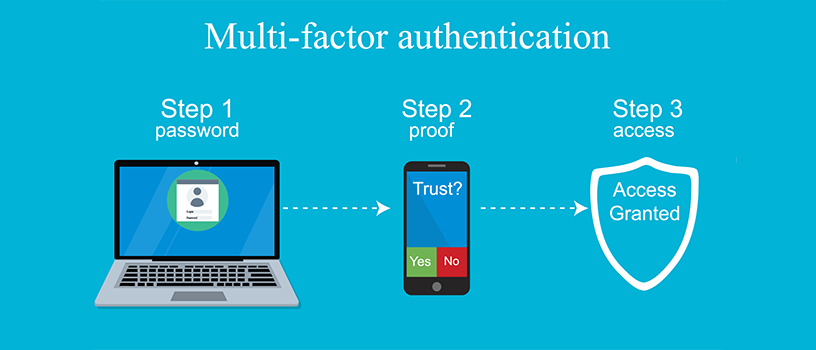

What is Multi-Factor Authentication (MFA)?
Multi-factor Authentication (MFA) is an authentication method that requires the user to provide two or more verification factors to gain access to a resource such as an application, online account, or a VPN. MFA is a core component of a strong identity and access management (IAM) policy. Rather than just asking for a username and password, MFA requires one or more additional verification factors, which decreases the likelihood of a successful cyber attack.
Three Main Types of MFA Authentication Methods
Most MFA authentication methodology is based on one of three types of additional information:
->Things you know (knowledge), such as a password or PIN
->Things you have (possession), such as a tic codes or smartphone verification
->Things you are (inherence), such as a biometric or voice recognition or otp
The way we live has been reformed by SmartPhones. Cell phones and PDAs have been packed with ubiquity to a great extent and consumers have now started webbased banking, webbased item purchasing and other online administrations. Either the site or the remote flexible channel has been used autonomously by previous web access authentication systems to confirm the personality of faroff clients. To get to the latest online administrations reliably needs a username and secret phrase to verify the client personality.
This is a major weakness because the hidden word can be compromised and later used by the man in the center attack to make illegal entry to the record of the client. We are likely to make a validation system based on a multi-faceted verification method that is both reliable and deeply accessible. It features a proprietary way to deal with rendering a validation system based on spasms (Exchange Recognizable proof code) and SMS (Short Message Administration) in order to enable the conventional Login/secret phrase framework to get an additional security level. In addition, we use an encryption method which depends on a symmetric key and an idea of an iterated block figure. This idea has been used to retain Spasms on PDAs/PDAs as a mystery code but is also used to start secure web transfers using mobile phones/PDAs. Finally, we extend the two-way validation framework that confirms the two players (client and e-specialist organization). A definite threat analysis shows that the proposed system is safe from various types of web attacks such as phishing, man-in-the-center, infections and anything similar as outlined above. In this project we are proposing a new system and a protocol for Secure way of transactions by using Multifactor Authentication System.